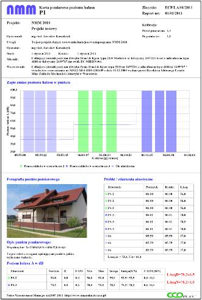

Prezentaja przedstawia wyniki badań prowadzonych zgodnie z metodyką referencyjną pomiaru hałasu zawartą w załączniku nr 6 do rozporządzenia Ministra Środowiska z dnia 4 listopada 2008 r. w sprawie wymagań w zakresie prowadzenia pomiarów wielkości emisji oraz pomiarów ilości pobieranej wody (Dz. U. Nr 206, poz. 1291 z dnia 4 listo-pada 2008)
Utworzenie prezentacji możliwe jest wyłącznie po utworzeniu przynajmniej trzech zdarzeń akustycznych tego samego typu, oraz trzech zdarzeń tła akustycznego. Liczba każdego typu zdarzeń nie może być mniejsza od trzech ze względu na konieczność policzenia niepewności pomiaru.
UWAGA: typ zdarzenia akustycznego reprezentującego tło akustyczne musi zostać nazwany słowem "tło", natomiast opis tego zdarzenia może być dowolny.
Utworzenie prezentacji, poza wymaganiami określonymi w powyższym rozdziale, wymaga także podania podstawowych danych charakterzujących funkcjonownie źródła hałasu. W tym celu wyświetlane jest okno dialogowe, w którym należy wprowadzić niezbędne informacje. Okno dialogowe przedstawione zostało na poniższym rysunku.

W oknie dialogowym występują następujące pola, które należy właściwie wypełnić
Prezentacja zawiera następujące sekcje:
Drukowanie prezentacji na arkuszu A4 przy ustawionych wszystkich marginesach drukarki = 0mm.
Przykładowa prezentacja wyników badania hałasu metodą próbkowania.
